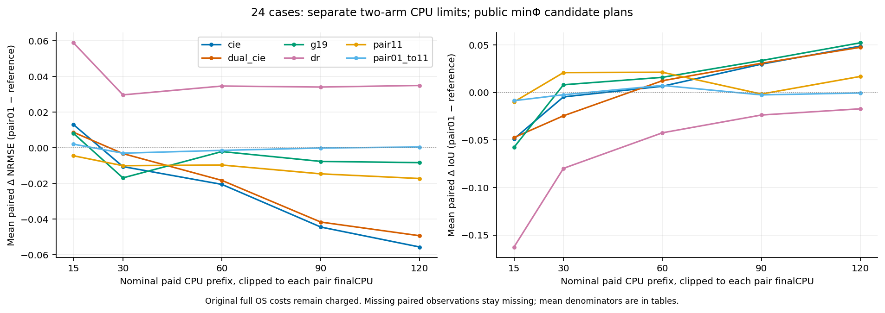
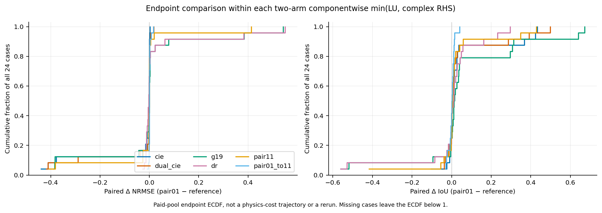

# Independent24：pair01的六组成对成本附注
固定pair01分别比较cie、dual_cie、g19、dr、pair11、pair01_to11，24case全保留。CPU端点取min(120,两臂原receipt最终processCPU)，物理端点取两臂最终physical LU/aggregate complex RHS的逐分量共同上限。候选必须满足原base eligible/legal/CPU≤120规则，再按公开min(Φ,candidate)选择；缺失费用不补0，缺失候选不以GT另选。
所有端点及CPU曲线计划先写盘，再导入旧score_results helper并读取已授权independent24真值。CPU_CURVE沿用原15/30/60/90/120标称prefix，每case各自clip到本次两臂共同CPU；不能视作全组11方法共同上限。物理小图只画端点paired-difference ECDF，未增加新的物理预算网格。
NRMSE/IoU/RMSE/relativeL2完全复用旧评分函数。CPU/PHYSICS_PAIRED_DIFFERENCES另有选中两臂材料数组间连续RMSE、truth-amplitude归一化RMSE、Linf及固定χ>1 support disagreement，避免仅看阈值过线。差值均pair01−reference。原NRMSE≤.15且IoU≥.70只作后验gain/loss描述，不参与任何选择。
原264个任务的全部OS子进程费用保留在FULL_ORIGINAL_COST_LEDGER_BEFORE_TRUTH；成对cutoff只是原已付费pool的离线比较，不退还后续CPU/物理费用，不是假装提前停止的inverse重跑。pair01在六比较中复用，不能把六比较费用相加当六份新实验。辅助FFT/块动作/设置/失败费用照原receipt保留，未被LU/RHS归一化为免费。
这份附注不更改已有score_extensions或任何原预测/评分；不作最终科学、新颖性或恢复因果解释。
{
"status": "OFFLINE_PAIRWISE_COST_ANALYSIS_COMPLETE",
"campaign": "independent24_v1",
"cases": 24,
"comparisons": 6,
"expected_endpoint_arm_rows": 576,
"actual_endpoint_arm_rows": 576,
"expected_endpoint_case_pairs": 288,
"actual_endpoint_case_pairs": 288,
"expected_CPU_curve_arm_rows": 1440,
"actual_CPU_curve_arm_rows": 1440,
"source_seal": "D:\\AI\\MAX_STRUCT_R14_DUALMETRIC_20261115\\audit\\independent24_SEAL_REMOTE_AUTHORIZED.json",
"metrics_helper": "D:\\AI\\MAX_STRUCT_R14_DUALMETRIC_20261115\\runtime\\scoring_history\\src\\score_results.py",
"original_unique_tasks": 264,
"original_run_status_counts": {
"COMPLETE": 264
},
"full_original_OS_child_CPU_seconds": 30369.53125,
"measured_original_OS_child_CPU_subtotal": 30369.53125,
"missing_original_external_CPU_tasks": [],
"all_original_costs_still_charged": true,
"cutoff_refund": false,
"curve_scope": "CPU prefixes original15/30/60/90/120 clipped independently for each two-arm comparison; physics figure is endpoint-difference ECDF only",
"new_inverse": 0,
"new_forward": 0,
"new_physical_LU": 0,
"new_complex_RHS": 0,
"new_optimizer": 0,
"truth_scope": "Authorized independent24 only, after all public plans written",
"issues": 0,
"offline_CPU_seconds": 16.640625,
"offline_wall_seconds": 17.745465999934822,
"figures": [
"PAIRWISE_CPU_CURVES.png",
"PAIRWISE_PHYSICS_ENDPOINT_ECDF.png"
],
"finished_utc": "2026-11-15T07:26:03.086729+00:00",
"scientific_review": "Parent owns scientific conclusions; no final novelty or recovery-causality judgment"
}
